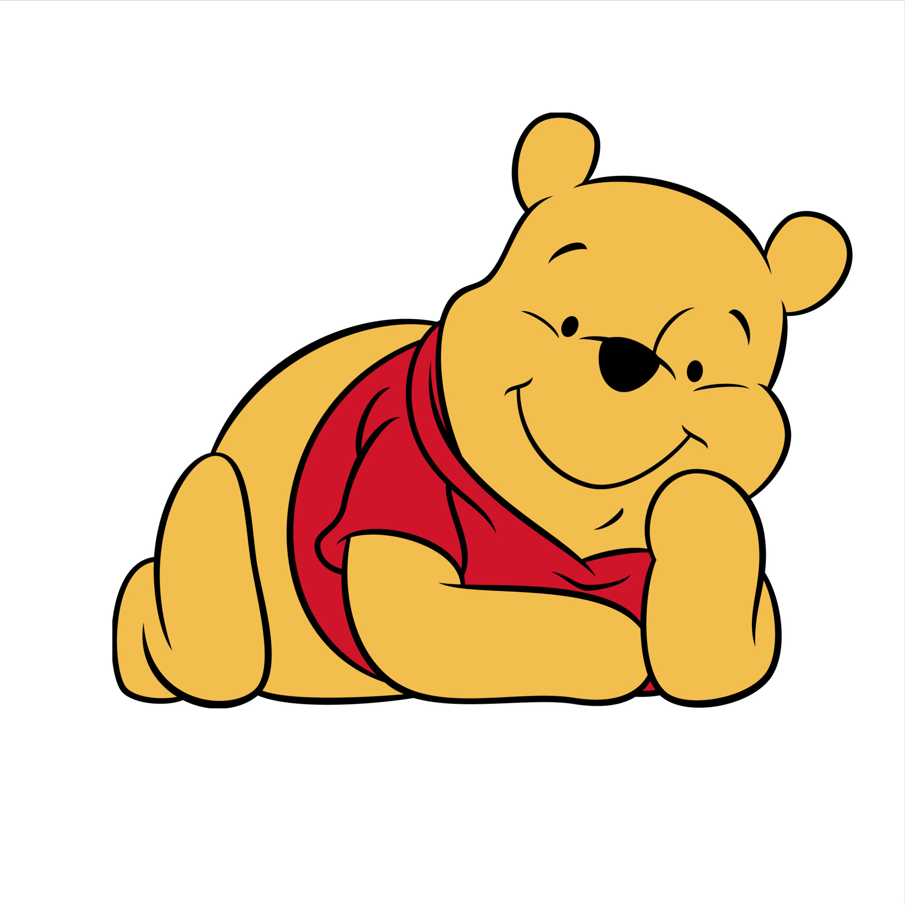

Winnie-the-Pooh is a fictional anthropomorphic teddy bear created by English author A. A. Milne and English illustrator E. H. Shepard. Winnie-the-Pooh first appeared by name in a children's story commissioned by London's Evening News for Christmas Eve 1925.
